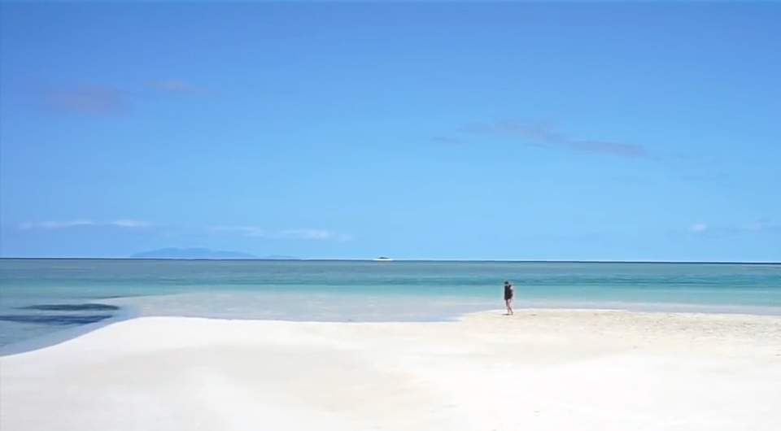
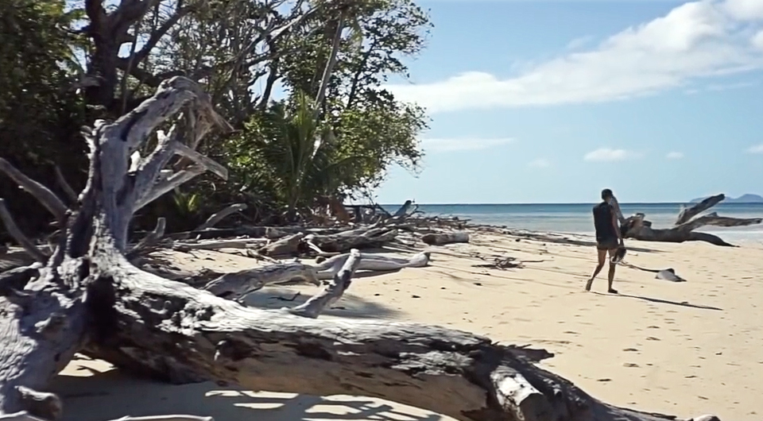

Leleuvia
A tiny island
We've never been on a tiny island, a place you can run the width of under just a few minutes. We found a place like this, Leleuvia, an island in the Lomaitivi archipelago in Fiji.
This island went through many hands over the years, it now belongs to a resort that too bears the name of the island. We decided to make a stop there on our way to Suva, to wait for favourable winds to go south.
Also, we wanted a taste of tiny-island living.
We arrived at Moturiki pass around 1pm. SY Scoots gave us a number to phone the resort on arrival, so they could send a boat to guide us through the reef. We realized then, that our phone plan didn't include calls within Fiji, all we had was data — woops! That's ok! We still had the option of calling them on VHF. I hailed them repeatedly on CH10 — no luck.
I had waypoints for the entrance, but not all the way to the anchorage. Many areas in Fiji aren't charted well, you can find yourself navigating over an area with the depth sounder reading "10m" but the chart will display a patch of green, an area too shallow to pass. It's always disconcerting, to find yourself anchored in a patch of green, like sitting in a negative space, a secret place that you didn't think existed.
We got closer and closer to the green area, growing ever-so nervous, and continuing to try and hail the resort. Eventually, they picked up my call.
- "Vessel calling, this is Leleuvia resort."
- "This is sailing vessel Pino, d'you have any moorings available?"
- "Yes. When you come near the pier we'll send a boat to escort you to it."
- "Great, thanks!"
We wouldn't be entering the anchorage in the blind after all. We would have eyes to guide us to a safe spot.
We motored on, nearing the pier, and spotted the escort boat. The driver came within shouting range, instructing us to follow, which we promptly did. They led us to a mooring, and assured us it was strong and that it could take our weight — not that Pino is heavy. We grabbed the line from the water, with a bit of difficulty, sometimes the mooring 'eye' for the buoys are submerged, and you need to figure out which bit to grab to get to it. We missed the mooring ball the first time, the whole endeavour was made worse by the up and down motion of the bow — there was a bit of swell coming into the anchorage from the north at the time. We rounded again to grab the mooring ball, i spied a thin loop at the top of the ball, and thrusted the boat hook in it. I hurriedly pulled the float out of the water, and my hands and the line found the mooring loop. This is not my favourite type of mooring ball, where you need to pull the ball up itself to find the rope hanging far underneath it, usually they'll put a separate float on the line to keep it buoyant. All moorings are different.
The northerly swell would stop soon, the forecast called for 20-25kts out of the SE tomorrow. On the chart, the area looked protected from swell, with a reef belt around it, but looking around now, aside from the tiny spit of land that is Leleuvia, there was only water. At low tide the reef became evident, as the water receded sand banks came into view, fencing us in from all directions but from the North. Phew. The reef would break most of the waves, but at high tide some swell would make it past it for sure — not ideal, but we would have some protection.
The next day the wind did freshen, and as expected, at high tide the waves spilled into the anchorage. It was bumpy, but not overly so.
Iggy still needed mending, I'd fixed some of the seams but not all. We didn't trust Iggy enough at this point to use Turnip (the outboard), imagine Iggy losing air and Turnip flopping into the water — what a disaster that would be. Without an outboard, we had little chance of making it ashore in an inflatable with broken oars, especially with all of this current. Plus the weather that day was all-around shitty, squalls came in succession, Pino danced with them in passing, until they drifted out of range. The rain came down hard. We could see land, but couldn't get to it.
The waves in the night kept us awake. I couldn't sleep, wondering if that mooring was as strong as they claimed it to be. I can now say that yes, that mooring is good and we stayed put. We were getting restless though, and even walks up on deck couldn't stop the twitch in our legs. The wind had died down, so we decided to call the resort on VHF to ask if they could pick us up — they were happy to do it.

The resort
The man dropped us off at the main pier, and we hopped onto land. It's weird to have the permission to come to a place like this, it feels exclusive, expensive and populated by tourists. It feels like we're cheating, as if we too should be paying something to be here. The mooring itself is free, although there is an unwritten rule about coming to shore at least once if you're on a mooring, to eat a meal at the restaurant, or have a drink. In this way, it pays itself.
The resort was composed of many separate facilities, with roofs of dried palm fronds kept up by thick logs. There were huts scattered all over the place, where the tourists stay. There was a dive shop, to rent diving or snorkeling gear, we even found showers that all can use (yes that means us too!). This resort was low-key, not overly expensive, which is kind of insane considering you need to take a boat to get here. It's far from everything, secluded — its own little country. And we're here, in it, for the price of a beer.
Resorts in Fiji didn't used to be this way, in the past they could restrict access to the land and the water around them. Giving the rise in numbers of resorts in the country, Fiji instated a law that annuled these restrictions and that returned access to all — Fijians and visitors alike. Some sailors in countries like Canada seek these same privileges, requesting access to waters that are no longer accessible to them. With the rising trend in real estate prices, more and more people will seek alternative lifestyles like becoming a liveaboard. Space on water needs to remain accessible to all.
In today's world, the 'right to anchor' is fantasy, widespread privatization of water and beach fronts is inevitable. If no one takes action, this will come to pass, groups in 'real-estate hell' cities like Vancouver are already taking a stand against this. Here's hoping they're successful, and that liveaboards will never suffer the woes of grid-living.
Back on Leleuvia, Devine & I took a quick walk around the facilities of the resort. We walked to a sandspit to the south of the island that extended far, even farther at low tide. The sand was almost white, near perfect, and the same could be said of the water — certainly not in terms of colour but of clarity.

Circumnavigating by foot
We decided then to round this small island by foot. Most of the resort is concentated on the southern end, the rest is thick with trees, their arms reaching out and curling near the water. These arms carried families of terns, amongst them, some of the largest i'd ever seen, much bigger than the ones who came to sit on our pile mooring in Whangarei. The white, black-capped birds all took off as we came near, taking to the skies whilst cawking and screaming into the wind. Big slabs of coral bordered the water, flat and smooth, softened by centuries of wave caressing.
Blinded by the greenery and turquoise sea, we forgot to look at our feet, a striped snake drew near — hm, best look down every now and then. This island is very much alive, and writhing.

After our circumnavigation of Leleuvia, we paid our unspoken dues to the resort by having a drink at the bar. Then, we asked the dive shop if they could take us back to Pino. One of the workers at the shop gladly volunteered to take us, — eager for a break, no doubt. We boarded the boat with him, and motored on slowly as we shared stories. He told us he is an olympic athlete, racing polynesian canoes. He is very proud of this sport, his face lights up as he speaks of it. It's great to see younger Fijians taking interest in traditional sport, it is used less for transportaion nowadays, but I'm happy it exists in some form. We drifted past Pino, listening to his story, his goals... but we all returned to reality then, he kicked the engine into gear and brought us home.
That night, we prepared Pino to leave, at sundown we raised the black moon. We left the anchorage in the dark to make it to Suva at first light, with the waypoints recorded coming in, making an exit in little light was safe enough.
This was a short text, befitting this small island. For more, watch the video about our stay in Leleuvia.